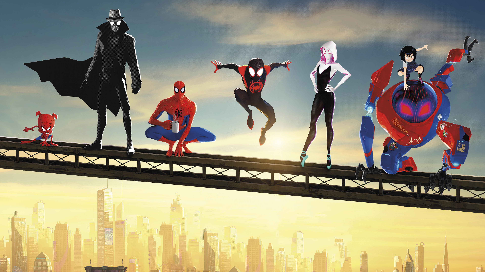

New York City teenager Miles Morales struggles to live up to the expectations of his father, police officer Jefferson Davis, who sees Spider-Man as a menace. Miles adjusts to boarding school, and visits his uncle Aaron Davis, who takes him to an abandoned subway station to paint graffiti. Miles is bitten by a radioactive spider and gains spider-like abilities similar to Spider-Man.

Returning to the station, Miles discovers a “Super-Collider” built by Kingpin. Miles watches as Spider-Man attempts to disable the collider while fighting Kingpin’s enforcers. He gives Miles a USB flash drive to disable the collider, warning that the machine could destroy the city if reactivated. Watching in horror as Kingpin kills Spider-Man, Miles flees from Prowler.
As the city mourns Spider-Man’s death, Miles tries to honor his legacy and become New York’s next superhero. Trying out his newfound abilities, he damages the USB drive. At Spider-Man’s grave, Miles meets Peter B. Parker, an older, worn-down version of Spider-Man from another dimension. Peter reluctantly agrees to train Miles in exchange for help stealing data to create a new drive.
Chased through the laboratory and surrounding forest by scientist Olivia Octavius, Miles and Peter are rescued by Gwen Stacy, a Spider-Woman from another dimension. They find Peter’s aunt, May Parker, who is sheltering more heroes from other dimensions—Spider-Man Noir, Peni Parker, and Spider-Ham. Miles offers to disable the collider so the others can return home, but the heroes tell him he lacks experience. Distraught, Miles retreats to Aaron’s home, where he discovers Aaron is Prowler. Unwilling to kill his own nephew, Aaron is mortally shot by Kingpin. Miles flees with Aaron, who tells him to keep going before dying of his injuries. Jefferson arrives on the scene and Miles escapes, leading his father to believe Spider-Man killed Aaron.
Miles masters his powers and goes to May to acquire web-shooters and repaint one of Peter’s suits. He joins the heroes, defeating Kingpin’s enforcers and using the USB drive to send them home. Kingpin fights Miles, attracting the attention of Jefferson, who realizes Spider-Man is not the enemy and encourages him. Miles paralyzes Kingpin with his venom blast and throws him at the kill switch, destroying the collider.
Back in their home dimensions, the heroes return to their lives; Peter prepares to fix his relationship with Mary Jane, and Gwen finds a way to contact Miles across dimensions.
